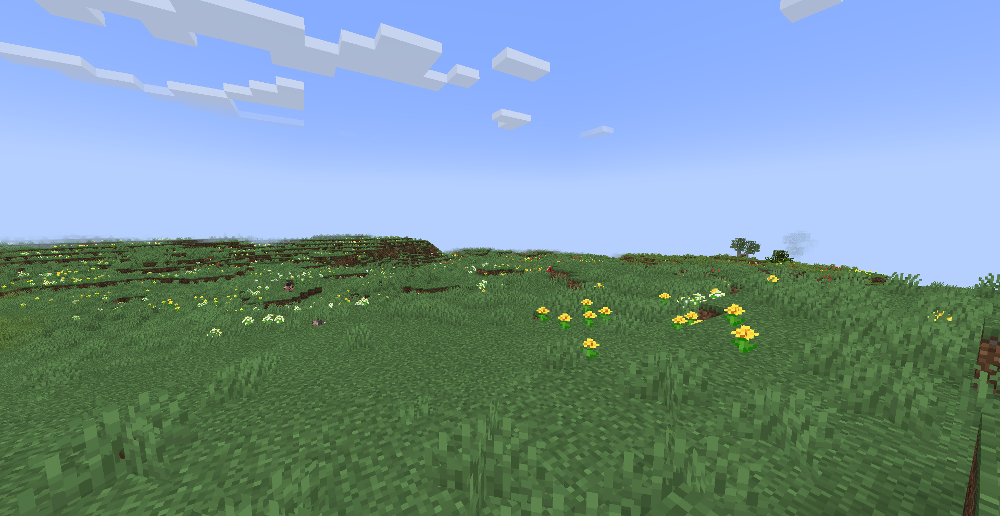
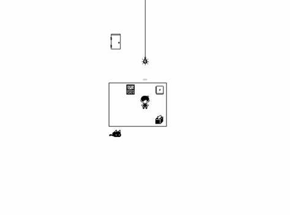
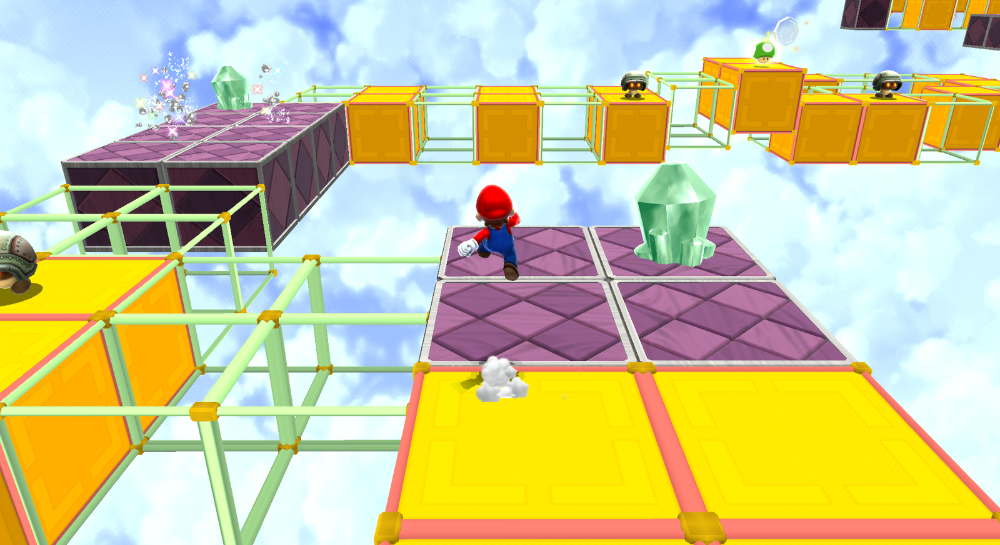

Experiment 4 - Infinite Worlds
Assets from Minecraft and OMORI. Help from ChatGPT and Wes's Code
Description
These projects are infinite world generators based on tiles and grids in an isometric view. Infinite Meadows is based off of the meadow biomes from Minecraft, using flowers from the game as sprites. Welcome to WHITESPACE is a generator that recreates WHITESPACE from OMORI. Blinking Blocks features an infinite line of tiles that switch on an off with twinkling stars in the empty space. Blinking Blocks was inspired by Beat Block Galaxy from Mario Galaxy 2, but it is not a direct representation.
  Technical
Each system runs on a grid each with their own coordinates. They all use the hash function to randomly generate different components of the scene. When the seed box is updated, everything is updated accordingly and stays the same for the same seeds. Infinite Meadows randomly scatters flowers and if the user clicks on a tile, it will change to become a different flower. Welcome to WHITESPACE has red hands that reset the camera back to the original position when they are clicked. Blinking Blocks has the tiles that turn on and off on a certain time interval while their color and position is also randomized.
Reflection
This assignment took a long time for me to complete but I didn't feel as lost as last time. I definitely felt lost in the beginning as I didn't feel like I knew the skills to implement random generation throughout an infinite world. Even though the first project may seem simple, it took me about 20 hours to complete it. At that point I decided to work on things that I actually knew I could probably implement with my knowledge. From there I created Welcome to WHITESPACE which was so much better for me to make because I actually knew what I was doing for the most part. Blinking Blocks was the same, though I did run into a few hiccups along the way. I also tried to use instance mode to have them all display on the same page but I figured it wasn't worth it, especially since I think they work better on seperate pages anyway.